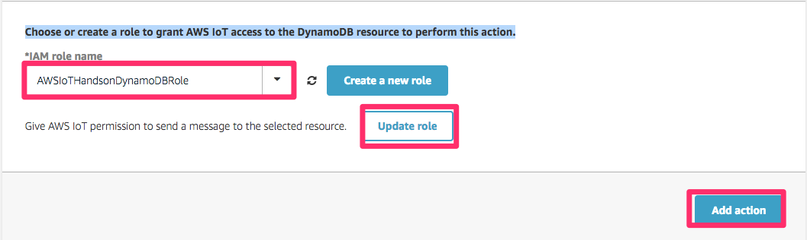

5. センサーデータの送信¶
Intel Edisonに接続された照度センサーのデータをAWSの各サービスにストアします。 EdisonはAWS IoTのトピックにデータをパブリッシュし、AWS IoTでルールに基づきDynamoDBへ保存します。使用するDynamoDBのテーブル”awsiot-handson-rawdata”は「3.ハンズオン準備」で作成したCloud Formationのスタックに含まれています。

センサーデータは以下のJSONフォーマットとします。
{
"timestamp": "2015-10-24T14:16:37.305Z", ←ISO8601形式
"value": "300" ←アナログ値
}
5.1. AWS IoT ルールの作成¶
メニューのRulesをクリックし[Create]をクリックします。
スクリーンショットの赤枠で囲んだ部分について、以下の項目を入力します。 任意の番号の部分は他のユーザと被らない数字を入力してください。
| 設定項目 | 値 |
|---|---|
| Name | SaveToDynamoDB<任意の番号> |
| SQL Version | 2016-03-23 |
| Description | 任意 |
| Attribute | *(アスタリスク) |
| Topic Filter | edison/illuminance<任意の番号> |

[Add action]をクリックし、”Select an action”から”Insert a message into a Database table”を選択し、[Configure action]をクリックします。
以下の値を入力します。
| 設定項目 | 値 |
|---|---|
| Table Name | awsiot-handson-table<任意の番号> |
| Hash Key Value | ${topic(2)} |
| Range Key Value | ${timestamp()} |
| Write message data to this column | value |
AWS IoTからDynamoDBへデータをPutするためのRoleを作成します。 “Choose or create a role to grant AWS IoT access to the DynamoDB resource to perform this action.”で[Create a new role]をクリックし、ロール名として”AWSIoTHandsonDynamoDB”と入力し、再度[Create a new role]をクリックします。 これによって入力したロール名が選択できるようになるので、作成したロールを選択し、[Upate role]をクリックし、次に[Add action]をクリックします。
“DynamoDB Action”が追加されたことを確認したら、[Create rule]をクリックします。
ルールが作成されたことを確認します。
5.2. プログラムの実行¶
照度センサーから照度データを取得し、AWS IoTのメッセージブローカーへ送信するためのプログラムを実行します。サンプルプログラム内のawsiot-handson-fundamentals配下のsensorに移動し、プログラムを実行します。
root@edison:~awsiot-handson-fundamentals/sensor# node main.js edison/illuminance<任意の番号>
Publish: {"timestamp":"2015-10-24T14:16:37.305Z","value":268}
Publish: {"timestamp":"2015-10-24T14:16:38.365Z","value":268}
Publish: {"timestamp":"2015-10-24T14:16:39.424Z","value":271}
Publish: {"timestamp":"2015-10-24T14:16:40.484Z","value":270}
Publish: {"timestamp":"2015-10-24T14:16:41.535Z","value":272}
DynamoDBのテーブルを確認し、データが格納されていることを確認してくださ い。マネージメントコンソールのトップ画面に戻り、DynamoDBを選択します。 画面左のメニューの”Tables”をクリックし、テーブル一覧から “awsiot-handson-table<任意の番号>”をクリックします。メイン画面上部の “Item”タブをクリックし、テーブルのデータを表示します。